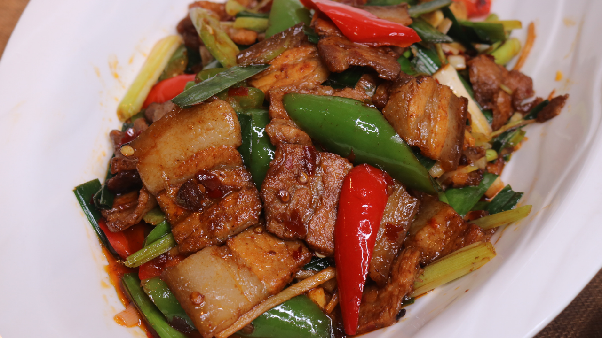

Twice Cooked Pork -Hui Guo Rou

Description
Twice Cooked Pork, or hui guo rou (回鍋肉), is a Sichuan dish of spicy seared pork belly that’s way too famous to ignore and too delicious not to share. If you’ve never tried it, you NEED to make this recipe. It is simply and unequivocally delicious!
Ingredients
- 1 lb(450g) of Pork Belly (It must be Pork Belly!)
- 2 Slice of Gineger
- 1/2 Tbs of Spicy Broad Bean Paste
- Cloved Garlice (Sliced)
- Long Hot Green Peppers (Seed Removed and 1.5 Inch per Pieces)
- Medium Leek (Washed and Cut into 2 Inch per Pieces)
- 1 Tbs of Shaoxing Wine
- 1 Tbs of Soy Sauce
- 1/4 Tbs of Sugar
Steps
- In a medium pot, bring 2 quarts of water to a boil. Add the whole piece of pork belly and the ginger, and bring the pot to a boil again. Lower the heat and simmer for 30 minutes, until the pork is tender and cooked through. Remove the pork from the pot and run it under cold running water for about a minute. Set aside.
- While the pork is cooling, prepare all the other ingredients. Once you are ready to cook (don't do this in advance, or the pork will dry out), thinly slice the pork belly (slices should be about 1/8 inch thick).
- Heat your wok over high heat until just starting to smoke. Add 1 tablespoon of oil and sear the pork, until you get a light caramelization, about 90 seconds. Turn the heat to medium-low and scoop out the pork. Add another tablespoon of oil to the wok.
- Add the spicy broad bean paste to the wok and let it fry in the oil for about 30 seconds to bring out the flavor and color. The color should be red; pay attention to the heat to avoid burning.
- Now add the garlic and fry for 30 seconds. Turn the heat to high and add the pork, peppers, and leeks. Stir-fry for a minute. Add the shaoxing wine, soy sauce, and sugar. Stir everything together. Once the leeks and are wilted and the peppers are cooked (while still having a little crunch), it's ready to serve.